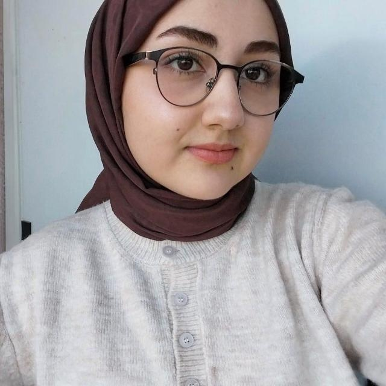

Akademik Profil
Öğrenci No: B251210070
Eğitim: Sakarya Üniversitesi
🚀 Teknofest 2026
🧠 Sağlıkta Yapay Zeka
📊 Veri Analitiği

Bilgisayar Mühendisliği Öğrencisi
Öğrenci No: B251210070
Eğitim: Sakarya Üniversitesi
Lisans eğitimim süresince, teorik algoritmik temelleri pratik mühendislik çözümleriyle birleştirmeye odaklanıyorum. Özellikle Nesneye Dayalı Programlama (OOP) ve veri yapıları alanında yetkinlik kazanırken, akademik çalışmalarımı yapay zeka disiplini üzerinde yoğunlaştırıyorum.
Teknofest 2026 Sağlıkta Yapay Zeka yarışması kapsamında veri optimizasyonu süreçlerinde teknik disiplin kazandım.